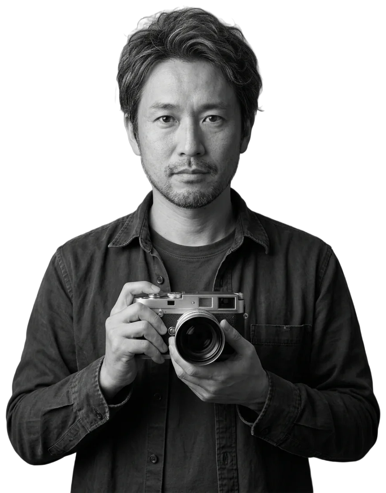

Every frame,
brought into focus.
Kenji Watanabe · Portrait photographer · Tokyo / Dubai
Hiroko UedaPotter, in her studio in Mashiko

Six frames, one keeper.
Every sitting ends on a contact sheet and a grease pencil. Look closer with the loupe: the circled frame went to print, the crossed one never left the studio.
Elena Vidal, ceramicist
Twenty minutes in her studio in Al Quoz, between two firings, with the first bowl of a new series. One north window, a grey backdrop, no assistant.
- Lens50 mm
- LightNorth window
- Exposure1/125 · f/2.8
- Frames6 shown, 1 select
Move the pointer over the sheet
Ten people, ten workplaces.
A potter in Mashiko, an abra captain on the Creek, a falconer at the edge of the desert. People who work with their hands, photographed where the work happens. Choose a name to see the full frame.
One lens, one light, twenty minutes.
-
Arrive early.
I come an hour before the sitting and watch the room work. The portrait is usually wherever the light and the habits meet.
-
One light.
A window when there is one, a single soft lamp when there isn't. Fewer lights, fewer reasons for the sitter to stiffen.
-
Twenty minutes.
People run out of patience before they run out of expressions. Short sittings keep the face honest.
Let's find your light.
For portraits, editorial commissions, books and annual reports. Sittings in Dubai and Tokyo; travel by arrangement.
- Oct: fully booked
- Nov: open
- Dec: open
- Jan: fully booked
- Feb: open
- Mar: open